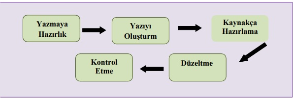
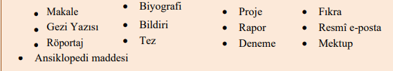

TDL102, Türk Dili 2 dersi final sınavında 7-14. haftalar arasındaki konulardan sorumlu olacaksınız. Sınava 7. hafta da dahil olacaktır.!
Türk Dili Notları ve Çalışma Soruları
7. Hafta Ders Notu özet
1. Deneme Yazısı
-
Tanım: Deneme, herhangi bir konuyu kişisel görüşlerle, etkili ve samimi bir anlatımla ele alan düzyazı türüdür. Okuyucuyu düşündürmeyi amaçlar ancak makale, fıkra ve eleştiriden farklıdır; belirli bir görüşü zorla kabul ettirmez, belge ve tanıklık zorunluluğu yoktur, kesin yargıya varmaz.
-
Tarihçe: 16. yüzyıl Fransız yazarı Michel de Montaigne, deneme türünün kurucusu sayılır. Montaigne, denemelerinde kendisini olduğu gibi, özentisiz ve samimi bir şekilde anlatmıştır. Deneme, güçlü bir "ben" bilinciyle yazılır.
-
Özellikleri:
-
Özneldir, "ben" dili hakimdir.
-
Konu sınırlaması yoktur; günlük hayattan büyük fikirlere kadar her konu işlenebilir.
-
Okurla yazar arasında samimi, sohbet havası vardır.
-
Kurmaca değildir, gerçek düşünceler dile getirilir.
-
İroni, anekdot ve özgün söyleyişler sık kullanılır.
-
Kesin yargıya varılmaz, okurun kendi sonucuna varması beklenir.
-
-
Alt Türleri:
-
Klasik Deneme: İçten, hoşça vakit geçirten, deneyim ve özdeyişler içerir.
-
Edebî Deneme: Edebiyat konularında, edebî boyutta düşünceler.
-
Felsefi Deneme: Doğruyu ve aydınlığı arayan, düşündüren yazılar.
-
Eleştirel Deneme: Bir konunun iyi-kötü yanlarını değerlendirir.
-
-
Türk Edebiyatındaki Temsilcileri: Ahmet Rasim, Ahmet Haşim, Yahya Kemal, Nurullah Ataç, Sabahattin Eyüboğlu, Melih Cevdet Anday, Yaşar Kemal, vb.
2. Söyleşi (Sohbet) Yazısı
-
Tanım: Yazarın kendi görüşleri doğrultusunda, günlük sanat olayları veya çeşitli konularda samimi ve konuşma havasında yazdığı yazı türüdür.
-
Özellikleri:
-
Soru-cevap tarzında anlatım, devrik cümleler yaygındır.
-
İçten, yalın, duru bir dil kullanılır.
-
Konu genellikle genel ve yüzeyseldir.
-
Öznel anlatım, kanıt arama zorunluluğu yoktur.
-
Deneme ile karıştırılabilir ama söyleşi daha uzundur.
-
-
Türk Edebiyatındaki Temsilcileri: Ahmet Rasim, Peyami Safa, Melih Cevdet Anday, Şevket Rado, vb.
-
Örnek Metin: Nurullah Ataç'ın "Geldiği Gibi" adlı söyleşisi, kış mevsimine dair içten ve samimi gözlemler içerir.
3. Röportaj Yazısı
-
Tanım: Bir kişi, yer ya da olayı, yazarın görüş ve düşünceleriyle birleştirerek geniş kitlelere tanıtan araştırma ve inceleme yazısıdır. Gazete, dergi, radyo, televizyon ve internet ortamında yaygındır.
-
Özellikleri:
-
Yaşatarak öğretme ve belgelemeyi amaçlar.
-
Genellikle soru-cevap ya da belgesel tarzında yazılır.
-
Doğruluk belge, fotoğraf, istatistikle desteklenir.
-
Kamuoyu oluşturma, toplum sorunlarını yansıtma işlevi vardır.
-
Yazarın bilgi birikimi ve deneyimiyle öznel boyut da taşır.
-
-
Röportaj Yapım Aşamaları:
-
Planlama: Konu ve görüşülecek kişi belirlenir; sorular hazırlanır.
-
Görüşme: Samimi ortam sağlanır; yeni sorular anlık sorulabilir.
-
Yayınlama: Metin gözden geçirilir, kişi onayı alınır, düzenlenir.
-
-
Türk Edebiyatında Örnekler: Ruşen Eşref Ünaydın, Yaşar Kemal, Fikret Otyam, vb.
-
Örnek Röportaj: Buket Uzuner ile yapılan söyleşi, yazarlık süreci ve çocuk kitaplarına dair görüşler içerir.
4. Deneme ve Röportaj Örnekleri
-
Montaigne'nin ölüm üzerine düşünceleri, yaşam ve ölümün kaçınılmazlığı ve insanın buna bakışı.
-
Afşar Timuçin'in yolculuk temalı denemesi; yolculuğun hayaller, umutlar ve kişisel keşif üzerindeki etkisi.
-
Nurullah Ataç'ın özgür kişi tanımı; gerçek özgürlüğün düşüncelerdeki tutarlılıkla mümkün olduğu.
-
Yaşar Kemal'in çocukluk ve gençlik yıllarına dair röportaj bölümü.
Genel Özet:
- hafta dersinde, farklı yazı türlerinden; özellikle deneme, söyleşi ve röportaj türleri detaylı olarak incelenmiştir. Deneme türü, yazarın kişisel düşüncelerini özgürce dile getirdiği, okuru düşündürmeyi amaçlayan özgün ve samimi yazılardır. Söyleşi, daha sohbet havasında, günlük konuları içten bir şekilde ele alır. Röportaj ise bir kişiyi veya olayı belgeleyerek, okuyucuya yaşatarak tanıtmayı hedefler ve genellikle gazetecilikle iç içedir.
8. Hafta Ders Notu özet
Kişisel Hayatı Konu Alan Metinler
-
Anı (Hatıra)
-
Anı, geçmişte yaşanmış olayların yazarın gözlem, izlenim ve bilgi birikimiyle anlatılmasıdır.
-
Anılar, bireysel ve öznel olmasına rağmen gerçeği saptırmamak önemlidir.
-
Anı ile öz yaşam öyküsü karıştırılmamalıdır; anı dışsal olaylara, öz yaşam öyküsü ise içsel olaylara odaklanır.
-
Anıların yazılması genellikle olaylardan uzun zaman sonra olur, bellek yanılmaları olabilir.
-
Anılar kronolojik ya da karışık sırayla yazılabilir.
-
Amaçları arasında unutulma korkusunu yenmek, gerçekleri kalıcı kılmak, tarihsel döneme ışık tutmak yer alır.
-
Türk edebiyatında anı türü Tanzimat sonrası yaygınlaşmış, önemli yazarlar arasında Yakup Kadri Karaosmanoğlu, Halide Edip Adıvar, Yahya Kemal, Refik Halit Karay gibi isimler vardır.
-
-
Günlük (Günce)
-
Günlük, yazarın kendi duygu, düşünce ve yaşadıklarını gün gün yazdığı yazı türüdür.
-
Günlük yazıları yaşandığı anda yazıldığı için anılardan farklı olarak tazelik ve doğrudanlık taşır.
-
İki türü vardır: içe dönük (kişisel) ve dışa dönük (çağının olaylarını anlatan).
-
Günlükler kanıt amaçlı değildir; içtenlik ve samimiyet önemlidir.
-
Batıda Franz Kafka, Virginia Woolf gibi önemli günlük yazarları vardır.
-
Türk edebiyatında günlük türü Tanzimat'la girmiş, asıl gelişimi ise Cumhuriyet dönemiyle olmuştur (Nurullah Ataç, Salah Birsel, Tomris Uyar gibi).
Türk edebiyatında günlük türü Tanzimat’la girmiş, asıl gelişimi ise Cumhuriyet dönemiyle olmuştur (Nurullah Ataç, Salah Birsel, Tomris Uyar gibi).
-
-
Gezi Yazısı
-
Gezi yazısı, yazarın gördüğü yerleri gözlem ve bilgiye dayalı, akıcı ve etkileyici bir şekilde anlattığı yazı türüdür.
-
Amaç farklı kültürleri, coğrafyaları tanıtmak, okuyucunun gezme arzusunu uyandırmaktır.
-
Gezi yazıları nesnel gözlemler ve yazarın öznel izlenimlerini bir arada barındırır.
-
Anı türünden farkı; gezi yazısı daha çok coğrafyaya odaklanırken anı bireysel yaşantılara odaklanır.
-
Anlatım biçimi olarak açıklayıcı, betimleyici, öyküleyici ve tartışmacı anlatım kullanılabilir.
-
Dünyada Marco Polo, İbni Batuta önemli gezi yazarıdır.
-
Türk edebiyatında Evliya Çelebi, Ahmet Mithat Efendi, Mehmet Rauf, Halit Ziya Uşaklıgil gibi isimler bu türde eser vermiştir.
-
Cumhuriyet döneminde Anadolu coğrafyasını ele alan gezi yazıları artmıştır.
-
Örnek Metinler
-
Mehmet Kemal’in Orhan Veli, Melih Cevdet ve Sait Faik ile ilgili anıları.
-
Günlük türünden Salah Birsel’in yazı örnekleri.
-
Aziz Nesin’in “Ter Koşusu” adlı metni.
-
Vedat Günyol’un “Geldi Olayı” anısı.
-
Murat Belge’nin Sofya sokakları hakkındaki gezi yazısı.
-
Haldun Taner’in Taç Mahal hakkındaki gözlemleri.
Genel Değerlendirme:
- hafta dersinde, kişisel hayatı konu alan yazı türleri detaylı incelenmiştir. Anı türü, yaşanmış geçmişe odaklanırken, günlük türü an ve duygu durumlarını anlık ve içten bir şekilde aktarır. Gezi yazısı ise hem nesnel gözlemler hem de yazarın izlenimlerini harmanlayarak farklı coğrafyaları, kültürleri okuyucuya sunar. Bu türler, hem bireysel deneyimleri hem de toplum ve tarih bilincini yansıtarak edebiyatımızda önemli yer tutar.
9. Hafta Ders Notu özet
Kişisel Hayatı Konu Alan Metinler
1. Biyografi (Yaşam Öyküsü)
-
Tanım: Kendi alanlarında tanınmış kişilerin yaşam öykülerinin araştırılıp, okuyucuya bilgi vermek amacıyla yazılan metinlerdir.
-
Özellikleri:
-
Nesnel, gerçeklere bağlı ve belgelere dayalı olmalıdır.
-
Sade, anlaşılır bir dil kullanılır; abartıya ve öznel yorumlara yer verilmez.
-
Genellikle üçüncü kişi ağzından yazılır.
-
Girişte kişinin doğum tarihi, yeri, ailesi, çevresi; gelişmede eğitim, kariyer, başarılar; sonuçta ise genel değerlendirme ve varsa eser listesi yer alır.
-
Uzunlukları kısa bir fıkradan roman boyutuna kadar değişebilir.
-
-
Türler:
- Ansiklopedik, belgesel, edebi ve söyleşi biçiminde biyografiler bulunur.
-
Türk Edebiyatında: Tanzimat’tan itibaren gelişmiş, Cumhuriyet döneminde çeşitli biçimlerde yazılmıştır.
-
Örnek: Sait Faik Abasıyanık’ın biyografisi.
2. Otobiyografi (Öz Yaşam Öyküsü)
-
Tanım: Kişinin kendi hayatını anlattığı yazı türüdür.
-
Özellikleri:
-
Birinci kişi ağzından anlatılır.
-
Anı türüne benzer ancak daha çok yazarın kendisini merkeze aldığı kişisel bir anlatımdır.
-
Gerçeğe bağlı kalınarak yazılır ancak nesnellik beklenmez.
-
Belgesel ve edebi biçimleri vardır.
-
-
Tarihçe: Batıda Augustine’nin 397’de yazdığı İtiraflar ilk örnek olarak kabul edilir. Rousseau’nun İtirafları otobiyografinin modern örneğidir.
-
Türk Edebiyatında: Az sayıda örnek vardır (Muallim Naci, Halikarnas Balıkçısı vb.)
-
Örnek: Cahit Külebi’nin çocukluk dönemini anlattığı metin.
3. Mektup
-
Tanım: Bir kişiye dilek, istek ya da arzuları iletmek amacıyla yazılan yazılardır.
-
Özellikleri:
-
Özel veya resmi olabilir.
-
Yazılış şekline göre özel, edebi, iş, resmi ve açık mektup türleri vardır.
-
Genellikle giriş, gelişme, sonuç bölümleri bulunur.
-
Özel mektuplarda samimi, içten bir dil kullanılır, çoğunlukla yakınlar arası yazılır.
-
Edebi mektuplar ise edebiyat dünyasının önemli belgeleri olarak kabul edilir.
-
İş mektupları resmi ve kısa, öz, ciddi bir üslupla yazılır.
-
Resmi mektuplar kamu kurumları arasında ya da vatandaşlara yönelik yazışmalardır.
-
Açık mektuplar ise kamuoyuna yönelik, gazete veya dergide yayımlanan mektuplardır.
-
-
Örnekler: Behçet Necatigil’den aileye yazılan özel mektup; Rilke’nin edebi mektubu; iş mektubu örneği; resmi ve açık mektup örnekleri.
Genel Özet:
- hafta dersinde kişisel hayatı konu alan metin türlerinden biyografi, otobiyografi ve mektup türleri detaylı olarak ele alınmıştır. Biyografiler, tanınmış kişilerin yaşam öykülerini nesnel ve belgelere dayalı olarak aktarır. Otobiyografi, yazarın kendi yaşamını birinci kişi ağzından anlattığı türdür ve daha öznel bir yapıdadır. Mektuplar ise iletişim amacıyla farklı tür ve biçimlerde yazılan yazılardır; özel, edebi, iş, resmi ve açık mektup gibi çeşitleri vardır. Bu türler, hem bireysel yaşamın hem de toplumsal ilişkilerin edebi ve belge değerindeki ürünleridir.
10. Hafta Ders Notu özet
Sözlü Anlatım Türleri - I
Günlük hayatta ve çeşitli kurumlarda kullanılan sözlü anlatım türleri hem bilgi vermek hem de tartışmak amacıyla yapılır. Bu türlerin etkin ve etkili kullanımı, bireyin kendini doğru ifade etmesini sağlar. Sözlü anlatımlar genelde hazırlıklı ve hazırlıksız olarak ikiye ayrılır.
1. Açık Oturum
-
Önceden belirlenen bir konu uzman bir grup tarafından bir başkan yönetiminde tartışılır.
-
Konu toplumun geniş kesimini ilgilendiren güncel bir meseledir.
-
3-5 konuşmacı vardır, her biri eşit süre içinde görüş bildirir.
-
Amaç ortak karara varmak değil, konunun çok yönlü ele alınmasıdır.
-
Dinleyici geniştir; bazen televizyon, radyo ya da internet üzerinden de yapılabilir.
-
Başkan tarafsızdır, konuşmaları yönetir ve oturum sonunda özet yapar.
-
Konuşmacılar birbirlerinin görüşlerine saygılı olmalıdır.
2. Panel
-
Bilimsel, sosyal veya siyasi bir konu uzmanlarca sohbet havasında değerlendirilir.
-
Amaç tartışma değil, farklı görüşlerin ortaya konmasıdır.
-
Konuşmacılar konuya ilişkin bilgi verir; dinleyiciler soru sorabilir.
-
Panel sonunda konuşmalar toparlanır, ancak sonuç bildirilmez.
-
Panelin soru-cevap bölümü varsa “forum” adını alır.
3. Forum
-
Açık oturum ve panel benzeri, ancak dinleyicilerin sürece aktif katıldığı toplantıdır.
-
Dinleyiciler yöneticinin kontrolüyle görüş ve sorularını ifade eder.
-
Dinleyicilerin katılımı konunun dağılmasına yol açabileceği için yönetici dikkatli olmalıdır.
-
Amaç, bilgi paylaşımı ve tartışmayı canlandırmaktır.
-
Konuşmalar belli bir sürede sınırlandırılmaz; yönetici konuşmaları denetler.
-
Dinleyici sayısı sınırsızdır.
4. Kongre (Kurultay)
-
Uzman ve katılımcıların belirli konular üzerinde görüş ve araştırmalarını sundukları toplantılardır.
-
Bilimsel, sanatsal ya da siyasi amaçlı olabilir.
-
Sunulan bildiriler (tebliğler) bilimsel içeriklidir.
-
Konuşmalar genelde belirli sürelerde, bir başkan yönetiminde yapılır.
-
Kongre sonunda bir kapanış bildirisi hazırlanır.
-
Bilimsel kongrelerde sunulan bildiriler daha sonra kitap halinde yayınlanabilir.
5. Çalıştay
-
Uzmanların belli bir konuda derinlemesine analiz, sentez ve problem çözme amaçlı toplandığı çalışma toplantısıdır.
-
Sonuçları yazılı metin haline getirilir.
6. Seminer
-
Uzmanların belirli bir konuda bilgi verdiği ve bu bilgiler üzerinde tartışıldığı toplantıdır.
-
Yükseköğretim kurumlarında öğrencilerin araştırma raporlarını sunduğu grup çalışması şeklinde de olabilir.
-
Sunumlar slayt ve diğer görsel desteklerle yapılabilir.
7. Açılış Konuşması
-
Etkinlikleri başlatmak amacıyla yapılan kısa, nazik ve sembolik anlam taşıyan konuşmalardır.
-
Protokol kurallarına uygun olarak seçilen konuşmacılar tarafından yapılır.
-
İçerik kısa ve öz olmalıdır.
8. Demeç
-
Yetkili kişilerin halka açıklama yaptığı, kısa, açık ve anlaşılır konuşmalardır.
-
Abartı ve söz dolandırmadan kaçınılır.
-
Genellikle basın organlarında yer alır.
9. Miting
-
Açık hava toplantılarıdır; genellikle toplumsal veya siyasi amaçlıdır.
-
Bir veya birden fazla konuşmacı tarafından halka hitap edilir.
10. Brifing
-
Kısa ve öz bilgi sunumu anlamına gelir.
-
Özellikle kurum yetkililerinin üst düzey yöneticilere yaptığı bilgilendirmelerdir.
-
Dil ve beden dili etkili kullanılmalıdır.
Örnek Çalışma Soruları ve Cevapları
- Açık oturum, panel, forum, kongre gibi sözlü anlatım türleri arasındaki farklar, özellikleri ve işleyişine yönelik çok sayıda soru bulunmaktadır.
Genel Özet:
- hafta dersinde sözlü anlatım türleri tanıtılmış ve açıklanmıştır. Bu türler, farklı amaçlar için topluluk önünde yapılan konuşmaları kapsar. Açık oturum, panel ve forum temel türler olarak tartışılırken, kongre, çalıştay, seminer, açılış konuşması, demeç, miting ve brifing gibi diğer sözlü iletişim türleri de açıklanmıştır. Her bir türün amacına, yapısına, katılımcılarına ve yönetim biçimine dair detaylar verilmiştir.
11. Hafta Ders Notu özet
Sözlü Anlatım Türleri - II
1. Nutuk (Söylev)
-
Amaç: Belirli bir topluluğa düşünceyi açıklamak, aşılamak ve coşturarak yönlendirmek.
-
Konuşmacıya “hatip” denir.
-
Konuşmada ses tonu, vurgu, jest ve mimikler çok önemlidir.
-
Konular siyasi, askeri, dini, ekonomik veya kültürel olabilir.
-
Mustafa Kemal Atatürk’ün “Nutuk” eseri, en önemli örnektir.
-
Başarılı nutuk için konuşmacının hedef kitleyi iyi tanıması ve etkili iletişim tekniklerini kullanması gerekir.
-
Konuşma, kısa ve vurucu cümlelerle, açık ve net ifade edilmelidir.
2. Konferans
-
Bilimsel, sanatsal veya teknik bir konuda uzman kişiler tarafından hazırlanarak sunulan bilgi verme amaçlı konuşma türüdür.
-
Konuşmacı, dinleyici kitlesinin seviyesine uygun, anlaşılır ve akıcı bir üslupla konuşmalıdır.
-
Konferanslarda konuşmacı önceden hazırlanır, konuşmayı ezberlemek yerine ana başlıklarla anlatır.
-
Konferans genelde 45 dakika ile 1 saat arasında sürer.
-
Amaç dinleyiciyi coşturmak değil, bilgilendirmektir.
-
Etkili konferans için diksiyon, beden dili, ses tonu, vurgu ve zaman yönetimi çok önemlidir.
3. Münazara
-
Önceden belirlenen konuda, karşıt iki görüşün jüri önünde tartışılmasıdır.
-
Her grup 3-5 konuşmacıdan oluşur, konuşmalar önceden hazırlanır.
-
Münazarayı bir başkan yönetir; jüri en iyi sunumu değerlendirir.
-
Dil ve üslup seviyeli, saygılı olmalıdır.
-
Münazara eğitici amaçlıdır; dinleme, mantıklı konuşma, eleştirel düşünme becerileri kazandırır.
-
Konuşmacılar fikirlerini belge, örnek ve istatistiklerle desteklemelidir.
-
Tartışma süreci konuşma, karşı argüman sunma, savunma ve soru-cevap aşamalarından oluşur.
4. Tartışma
-
İki veya daha fazla kişinin karşıt düşüncelerini karşılıklı savunmasıdır.
-
Seviyeli ve bilimsel delillere dayanmalıdır.
-
Konu önceden belirlenir ve bir başkan tarafından yönetilir.
-
Tartışma, farklı görüşlerin anlaşılması ve dinleme becerilerinin gelişimi açısından faydalıdır.
-
Kırıcı, küçümseyici ifadelerden kaçınılmalıdır.
-
Amaç fikirlerin kazanması değil, sürecin işletilmesidir.
5. Sempozyum (Bilgi Şöleni)
-
Bilimsel ve sanatsal konularda, farklı uzmanların bir araya gelerek belirli bir temada konuştuğu akademik toplantılardır.
-
Konuşmalar önceden hazırlanır ve genellikle yazılı hale getirilip yayınlanır.
-
Oturumlar başkan tarafından yönetilir.
-
Sempozyumlar ulusal veya uluslararası olabilir.
-
Amaç konuyu tartışmak değil, açıklık ve çözüm getirmektir.
-
Sempozyumlarda görsel ve poster sunumlar da yer alabilir.
6. Telekonferans
-
Farklı mekânlarda bulunan kişilerin ses ve görüntü ile birbirleriyle iletişim kurduğu elektronik konferanstır.
-
Mekân engelini kaldırır ve zaman ve maliyet açısından tasarruf sağlar.
-
Özellikle uzaktan eğitim ve toplantılar için kullanılır.
-
Teknik altyapı sağlam olmalıdır.
7. Webinar (Web Semineri)
-
İnternet üzerinden yapılan, sesli, görüntülü, metin tabanlı canlı veya isteğe bağlı seminerlerdir.
-
Katılımcılar anket, soru-cevap ve testlerle interaktif olarak katılabilir.
-
Düşük maliyetli ve geniş erişimli eğitim ve tanıtım aracıdır.
-
Webinar hazırlığında planlama, içerik seçimi, tanıtım ve teknik denetim önemlidir.
Genel Değerlendirme:
- hafta dersinde sözlü anlatım türlerinin ikinci kısmı ele alınmıştır. Nutuk, konferans, münazara, tartışma, sempozyum, telekonferans ve webinar türlerinin amaçları, özellikleri ve uygulama şekilleri ayrıntılı şekilde incelenmiştir. Özellikle etkili iletişim, hedef kitleye uygunluk, teknik altyapı ve interaktivite konuları vurgulanmıştır.
12. Hafta Ders Notu özet
Resmî Yazışmalar
-
Resmî Yazı Nedir?
Devlet kurumları, kişiler ve özel kuruluşlar arasında iletişimi sağlamak için yazılan, "Resmî Yazışmalarda Uygulanacak Esas ve Usuller Hakkında Yönetmelik"e göre tanımlanan, belge ve bilgi içerikli yazılardır. Günümüzde çoğunlukla elektronik ortamda yapılır. -
Resmî Yazışma Türleri:
-
Kurumlar arası yazışmalar
-
Kurumdan kişiye yazışmalar
-
Kişiden kuruma yazışmalar
-
Kişiden kişiye yazışmalar (örneğin iş mektupları)
-
-
Elektronik Yazışma:
Elektronik Belge Yönetim Sistemi (EBYS), elektronik imza ve elektronik onay kavramlarıyla devlet yazışmalarının dijitalleşmesi sağlanmıştır. Bu sistemlerle zaman, maliyet ve fiziksel alan tasarrufu sağlanır.
Dilekçe
-
Kamu veya özel kurumlara istek, şikayet veya bilgi talebi için yazılan resmî mektup türüdür.
-
Üç ana bölümden oluşur:
-
Konunun kısa açıklaması
-
İstek veya şikayetin belirtilmesi
-
Arz/rica ifadesi ile sonuç
-
-
Dilekçede “arz ederim” ya da “rica ederim” ifadeleri kullanılır; yazıldığı makamın hiyerarşisine bağlı olarak değişir.
-
Yazım kuralları: Tek yüz A4, belirli boşluklar, mavi/siyah kalem, açık ve net dil, imza, adres ve iletişim bilgileri zorunludur.
-
Dilekçe türleri: İstek dilekçesi ve şikayet dilekçesi.
Öz Geçmiş (CV)
-
Bireyin eğitim, deneyim, yetenek, beceri ve kişisel bilgilerini belgeleyen kısa yazı türüdür.
-
İş başvurularında kurumların adayları ön değerlendirmesine olanak sağlar.
-
İçeriğinde kişisel bilgiler, eğitim, iş deneyimi, yetkinlikler, sertifikalar, referanslar gibi bilgiler yer alır.
-
Form veya düz metin şeklinde hazırlanabilir.
-
Bilgiler doğru, açık ve belgelendirilebilir olmalıdır.
-
CV’de dinî ve politik içerikler yer almamalıdır.
-
Genel olarak 1-2 sayfa olmalıdır.
Rapor
-
Belirli bir konu veya olaya ilişkin araştırma sonuçlarını içeren yazılı metindir.
-
Amaç, konuyu açıklamak, değerlendirmek ve gerektiğinde öneride bulunmaktır.
-
Türleri: Araştırma raporu, sağlık raporu, bilirkişi raporu, faaliyet raporu vb.
-
Rapor yazımında objektiflik ve bilimsel ölçüler önemlidir.
-
Raporun yapısı genellikle: Başlık, sunulduğu makam, hazırlayanlar, tarih, gerekçe, giriş, gelişme, sonuç, imza, ekler ve kaynakça şeklindedir.
Tutanak
-
Meclis, kurul, mahkeme gibi yerlerde söylenen sözlerin veya olayların olduğu gibi yazıya geçirilmesidir.
-
Resmî belge niteliği taşır ve olay anında yazılır.
-
Yazımında kronolojik düzen, imza zorunluluğu ve değişikliklerde onay şarttır.
-
İki türü vardır: Toplantı tutanağı ve olay tutanağı.
-
Tutanak yapısı: Başlık, giriş, gelişme, sonuç, tarih ve imza bölümlerinden oluşur.
İlan/Duyuru
-
Televizyon, gazete, radyo veya internet gibi kanallarla geniş kitlelere iletilen bilgi türüdür.
-
Resmî ve özel ilanlar olarak ayrılır.
-
Resmî ilanlar devlet kurumları, özel ilanlar ise gerçek veya tüzel kişiler tarafından hazırlanır.
Karar
-
Kurumların veya kişilerin toplantı ve araştırmaları sonucunda ulaştıkları kesin yargıların yazılı biçimidir.
-
Karar yazısı; tarih, sayı, toplantı yeri, katılımcılar, alınan kararlar ve imzaları içerir.
-
Karar, oy birliği veya çokluğu ile alınır ve bağlayıcıdır.
İş Mektubu
-
Ticari veya işle ilgili konularda kullanılan, kısa, net ve resmi bir dille yazılan yazılardır.
-
İçeriğinde gönderen bilgileri, tarih, hitap, konu, talep veya bilgi yer alır.
-
Belgeler varsa eklenir.
-
İş mektuplarında her istek için ayrı mektup yazılmalıdır.
Resmî Mektup
-
Resmî kurumların birbirlerine veya vatandaşlara yazdıkları yazılardır.
-
Dilekçeden farklı olarak tarih, sıra numarası ve konu başlığı yer alır.
-
Resmî belge niteliğindedir ve yazım şekline dikkat edilir.
13. Hafta Ders Notu özet
Akademik Yazma ve Akademik Yazı Özellikleri
-
Akademik Yazma Tanımı:
Bilimsel bilgi paylaşımını amaçlayan, ileri düzey yazma becerisi gerektiren, bilimsel dil ve kurallara uygun metin oluşturma sürecidir. Akademik yazılar, tezler, makaleler, bilimsel raporlar gibi bilimsel ürünleri kapsar. -
Özellikleri:
-
Eleştirel ve nesnel bir yaklaşım gerektirir.
-
Tutarlı ve sistematik olmalıdır.
-
Uzmanlık ve teknik bilgi ister.
-
Günlük dilden farklı, bilimsel ve resmi bir dille yazılır.
-
Okuyucusu genellikle bilim insanlarıdır.
-
Açıklama, bilgi aktarma ve ikna etme amaçlıdır.
-
Akademik Yazmada Etik ve Akademik Yazarlık
-
Bilimsel Etik Kuralları:
TÜBİTAK’ın yayınladığı etik kurallar; uydurma, çarpıtma, aşırma (intihal), tekrar yayım, destek veren kuruluşu belirtmeme, haksız yazarlık, yanıltıcı beyan, görev ihmalinden kaçınma gibi davranışların yapılmaması gerekir. -
Araştırmacının Özellikleri:
-
Bilim ahlakına sahip olmalı.
-
Entelektüel merakı olmalı.
-
Titiz ve sabırlı olmalı.
-
Yazım dilini iyi kullanmalı.
-
Literatür tarama, veri toplama, analiz ve kaynak gösterme becerileri gelişmiş olmalı.
-
Akademik Yazma Süreci
-
Aşamalar:
-
Yazmaya Hazırlık (konu seçimi, amaç belirleme, hedef kitle, yazı türü, kaynak araştırması)
-
Yazıyı Oluşturma (bilgilerin derlenmesi, taslak oluşturma)
-
Düzeltme (metnin gözden geçirilmesi, içerik ve dil yönünden iyileştirme)
-
Kaynakça Hazırlama (APA stiline uygun kaynak gösterme)
-
Kontrol Etme ve Sunum (son okuma, yazının yayımlanması)
-
Akademik Metin Türleri
-
Akademik metinler, öğretim ve araştırma amaçlıdır, estetik kaygı taşımaz.
-
Başlıca türler:
-
Makale: Bir konuyu kanıtlarla savunan yazı.
-
Bildiri: Bilimsel kongrelerde sözlü sunulan metin.
-
Tez: Üniversite öğrencileri tarafından yapılan bilimsel araştırma ürünü.
-
Rapor: Bir konu hakkında detaylı inceleme ve sonuç sunan yazı.
-
-
Makale, bildiri ve konferans arasındaki farklar vurgulanmıştır.
14. Hafta Ders Notu özet
Kitle İletişim Araçlarının ve Sosyal Medyanın Türkçe Üzerindeki Etkisi
-
Kitle İletişim Araçlarında Türkçe:
-
Haber programlarında çok sınırlı bir sözcük dağarcığı kullanılıyor.
-
RTÜK yasası Türkçenin kurallarına uygun kullanılmasını zorunlu kılıyor.
-
Ancak, özel yayıncılıkla beraber dilde bozulmalar, yabancı kelimeler, argo, kaba ifadeler yaygınlaştı.
-
Bu durum özellikle genç kuşakların diline olumsuz yansıyor.
-
Yayımcı kuruluşların ve spikerlerin Türkçeyi doğru kullanması için eğitimler ve denetimler öneriliyor.
-
-
Sosyal Medyada Türkçe:
-
Sosyal medya iletişiminde kısa ve hızlı paylaşımlar, yazım ve söyleyiş kurallarına dikkat edilmemesine yol açıyor.
-
Ünlü harflerin atlanması, büyük harf kullanımında kuralsızlıklar, yabancı dil etkisi belirgin.
-
Bu durum dilin yozlaşmasına neden olabilir.
-
Sosyal medyada kullanılan dil, gençler arasında özellikle etkili ve bu yüzden özen gerektirir.
-
Anlatım Bozuklukları
-
Nedenleri: Bilgi eksikliği, dilbilgisi kurallarını bilmemek, noktalama hataları, dikkatsizlik, özensizlik gibi sebepler.
-
Anlatım Bozukluğu Türleri:
-
Anlamsal Bozukluklar: Yanlış kelime kullanımı, gereksiz kelimeler, anlamca çelişen sözcükler, yanlış kullanılan atasözleri ve deyimler, sözcüğün yanlış yerde kullanılması, mantığa aykırı ifadeler.
-
Yapısal Bozukluklar: Özne eksikliği, nesne eksikliği, tümleç eksikliği, yüklem eksikliği, özne-yüklem uyumsuzluğu, ek-fiil eksikliği, çatı uyumsuzluğu, eklerin yanlış kullanımı, yanlış kurulmuş tamlamalar.
-
-
Örnekler:
-
“Çekimser” yerine “çekingen” kullanılmalı.
-
“Elinden geleni ardına koymamak” deyimi yanlış kullanılmış.
-
“O kadar zor durumdaydı ki bırak içecek bir tas çorbayı yiyecek bir lokma ekmeği bile yoktu.” ifadesi mantık hatası içerir.
-
Eksik özneler ve nesneler, uyumsuz yüklemler gibi dilbilgisel hatalar anlatım bozukluğuna yol açar.
-
Alınması Gereken Önlemler
-
Ana dili eğitiminin güçlendirilmesi; öğretmenlerin iyi yetiştirilmesi ve dil bilgisi öğretimine ağırlık verilmesi.
-
Yabancı dille öğretimden vazgeçilmesi, ana diline önem verilmesi.
-
Dil kurallarını denetleyecek yetkili kurumların etkin hale getirilmesi (Türk Dil Kurumu vb.).
-
Radyo ve televizyonlarda dil eğitimi zorunluluğu ve denetimi.
-
Türkçeyi doğru kullananların teşvik edilmesi, yanlış kullananlara yaptırımlar getirilmesi.
Genel Değerlendirme:
14. haftada Türkçenin kitle iletişim araçları ve sosyal medya üzerindeki durumu ve etkileri değerlendirilmiş, dilin bozulmasının sebepleri ve anlatım bozuklukları detaylıca açıklanmıştır. Bu bozuklukların önlenmesi için eğitim, denetim ve bilinçlendirme önlemleri önerilmiştir.
Summaries prepared by ChatGPT-4o
Ders Kaynakları
Örnek Çalışma Soruları
7. Hafta Çalışma Soruları
-
Aşağıdakilerden hangisi deneme türünün özelliklerinden değildir?
a. Özgün söyleyişlere yer verilir.
b. İroniden geniş ölçüde yararlanılır.
c. Her konuda yazılabilir, konu sınırlaması yoktur.
d. Ele alınan konuda okurun düşünmesi amaçlanır.
e. Düşünceler kesin yargılara bağlanmaya çalışılır. -
Aşağıdakilerden hangisi deneme türünün özelliklerinden biri değildir?
a. Öznel bir tartışma üslubuna sahip olması
b. Kurmaca bir tür olması
c. Genel okur kitlesine hitap etmesi
d. Nesir (düzyazı) tarzında yazılması
e. İroni, mizah, hiciv vb. farklı anlatım tekniklerini kullanması -
Günlük hayattan alınan herhangi bir konu üzerinde bir ispat amacı güdülmeden kaleme alınan yazı türü aşağıdakilerden hangisidir?
a. Makale
b. Eleştiri
c. Anı
d. Deneme
e. Gezi yazısı -
Aşağıdaki sanatçılardan hangisi söyleşi türünde eser vermiştir?
a. Şevket Rado
b. Adalet Ağaoğlu
c. Muallim Naci
d. Reşat Nuri Güntekin
e. Ahmet Hamdi Tanpınar -
“Türk edebiyatında günümüzdeki şekliyle ilk röportaj örneklerini … “Anafartalar Kumandanı Mustafa Kemal’le Mülakat” adlı eserle vermiştir.”
Boş bırakılan yere aşağıdakilerden hangisi getirilmelidir?a. Suut Kemal Yetkin
b. Halikarnas Balıkçısı
c. Yakup Kadri Karaosmanoğlu
d. Ruşen Eşref Ünaydın
e. Behçet Necatigil -
Gazeteciliğin önemli bir dalıdır, soru-cevap yoluyla hazırlanır. Bir sorunu, olayı, gerçeği araştırma ve inceleme yoluyla anlatan yazılardır.
Yukarıda verilen bilgi hangi edebi türün özelliğini yansıtır?a. Eleştiri
b. Biyografi
c. Röportaj
d. Otobiyografi
e. Anı -
“Bir konu hakkında bilgi toplamak üzere o konu ile ilgili kişilerle görüşüp bilgi toplamak ve daha sonra toplanan bilgileri belirli bir düzen dâhilinde yazıya geçirmek” şeklinde tanımlanan yazı türü aşağıdakilerden hangisidir?
a. Deneme
b. Fıkra
c. Makale
d. Hatırat
e. Röportaj -
Aşağıdaki yazılı anlatım türlerinden hangisinde önceden soru hazırlanması gerekir?
a. Makale
b. Deneme
c. Röportaj
d. Hatıra
e. Gezi yazısı
- E
- B
- D
- A
- D
- C
- E
- C
8. Hafta Çalışma Soruları
-
Aşağıdaki cümlelerin hangisinde sözü edilen yazı türü yanlış tanımlanmıştır?
a. Tanınmış bir kişiyi, yeri ya da sanat dalını geniş okur kitlelerine, kendi görüş ve düşünceleriyle birleştirerek araştırma, inceleme yoluyla tanıtan, ayrıntılı bilgi veren yazılara röportaj denir.
b. Günü gününe yazılan, üzerinde yazıldığı günün tarihi bulunan yazılar ve bu yazılardan oluşturulan yapıtlara günlük denir.
c. Yazarın birtakım olayları belgelerle, tanıklarla ya da mektuplarla anlattığı yazı türüne anı denir.
d. Bilim, sanat, siyaset, spor vb. alanlarının herhangi birinde tanınmış kişilerin, kendi yaşamını anlattığı yazı türüne öz yaşam öyküsü denir.
e. Yazarın gözlem ve bilgiye dayalı olarak, gezip gördüğü yerleri çeşitli yönleriyle, özenli bir anlatımla yansıttığı yazılara gezi yazısı denir. -
Aşağıdakilerden hangisi gezi yazısı türünün edebiyatımızdaki önemli temsilcilerindendir?
a. Evliya Çelebi
b. Namık Kemal
c. Şinasi
d. İbni Batuta
e. Edirneli Sehî Bey -
I. Kişisel hayatı konu alan metinlerdir.
II. Tarihe ve edebiyata kaynaklık eder.
III. Sade bir dil kullanılır.
IV. Gazete ve dergi yazısıdır.
V. Yazıldığı günün tarihini taşır.
Yukarıdaki numaralanmış cümlelerden hangileri mektup, anı ve günlük için ortak değildir?a. I. ve II.
b. II. ve III.
c. I. ve IV.
d. IV. ve V.
e. III. ve V. -
Altı yaşımda bile yoktum. Ata binmekten, evden uzaklaşıp değişik yerler görmekten inanılmaz ölçüde hoşnut olurdum. Bir gün at arabasına bindirdi babam beni, eski araba. Yine uzaklaştık evden, değişik değişik yerler gezdik. Ama bir yer vardı, bir köprü, bir tren köprüsü. Bu köprünün altından geçerken sımsıkı sarıldım babama, bu anı hiç unutmayacağım dedim içimden, öyle de oldu, ne zaman bir köprünün altından geçsem bu anı hatırlarım.
Yukarıda verilen parça hangi edebi türün örneğidir?a. Günlük
b. Röportaj
c. Anı
d. Gezi
e. Makale -
Aşağıdakilerden hangisi günlük türünün özelliklerinden değildir?
a. Hangi gün yazıldığı düşünülen tarihten bellidir.
b. Olan biten olay ve düşünce sıcağı sıcağına yazılmıştır.
c. Yazan kişinin hayatını ve düşüncesini yansıtan bilgiler içerir.
d. Yazar ele aldığı konuyu delillerle ispatlama yoluna gider.
e. Samimi bir üslupla yazılır. -
Anı ile ilgili olarak aşağıda verilen bilgilerden hangisi yanlıştır?
a. Anlatıcı, olayları yaşayan ya da tanıklık eden kişidir.
b. Siyasi, edebi, askeri ve sosyal içerikli olabilir.
c. Genellikle betimleyici ve kanıtlayıcı anlatımdan yararlanılır.
d. Anlaşılır, içten bir anlatım yöntemi kullanılır.
e. Tarihe ve edebiyata kaynaklık eder.
- C
- A
- D
- C
- D
- C
9. Hafta Çalışma Soruları
-
“Burada bir adam var. Onun hakkında birçok belge ve delillerim var. Ben gerçek bir portre çizmeye çalışacağım.” diyen bir yazarın yazdığı yazı türü aşağıdakilerden hangisidir?
a. Makale
b. Öz yaşam öyküsü
c. Yaşam öyküsü
d. Anı
e. Eleştiri -
Edebiyatımızda aşağıdaki düşünce yazılarından hangisi diğerlerine göre daha az örneği bulunan bir türdür?
a. Makale
b. Deneme
c. Anı
d. Gezi yazısı
e. Öz yaşam öyküsü -
Aşağıdaki seçeneklerden hangisi resmî yazışma türlerinden biri değildir?
a. Dilekçe
b. Edebi mektup
c. Karar
d. Tutanak
e. Rapor -
Aşağıdaki cümlelerin hangisinde mektup türü ile ilgili olarak bilgi yanlışlığı yapılmıştır?
a. Konu sınırlaması yoktur, hemen her konuda yazılabilir.
b. Roman gibi bazı yazı türlerinin içerisinde de yer alabilir.
c. Kamu kurumları arasına yazılan mektuplara resmi mektup denir.
d. Gazete ve dergilerde herkesin okuması için yazılan mektuplara açık mektup denir.
e. İş mektuplarında ve dilekçelerde tarih ve adres sağ alt köşeye yazılır. -
Mektup türüyle ilgili aşağıdaki bilgilerden hangisi yanlıştır?
a. Yazar herhangi bir konudaki görüşünü karşısındakine kabul ettirmek amacıyla mektuba başvurur.
b. Kişilerin bir haberi, bir durumu başkasına iletmek için yazdığı yazılardır.
c. Fuzuli'nin "Şikâyetname" adlı eseri edebi mektup türünün ilk örneklerindendir.
d. Tanzimat'tan sonra gazetelerde yayımlanan birçok mektup görülmüştür.
e. Mektuplar yazılış amaçlarına göre çeşitli isimler alabilir. -
Mektup türü ile ilgili olarak aşağıdakilerden hangisi yanlıştır?
a. Mektuplar; edebî, özel ve resmî olarak üçe ayrılmaktadır.
b. Mektup yazılırken çizgisiz, beyaz kâğıt kullanılmalıdır.
c. Mektup yazılırken okunaklı el yazısı tercih edilmelidir.
d. Mektup yazılan kişiye uygun hitap kullanılmalıdır.
e. Mektup yazarken kurşun kalem kullanılmalıdır. -
Bir kişinin kendi hayat öyküsünü anlattığı yazı türü aşağıdakilerden hangisidir?
a. Otobiyografi
b. Biyografi
c. Mektup
d. Anı
e. Sohbet -
Ünlü kişilerin yaşam öykülerinin başkaları tarafından anlatıldığı yazı türü aşağıdakilerden hangisidir?
a. Biyografi
b. Anı
c. Mektup
d. Rapor
e. Otobiyografi -
Mektupların sağ üst köşesinde aşağıdakilerden hangisi bulunmalıdır?
a. Adres
b. Hitap sözcüğü
c. İsim soy isim
d. Tarih
e. İmza
- C
- E
- B
- E
- A
- E
- A
- A
- D
10. Hafta Çalışma Soruları
-
Aşağıdakilerden hangisi “açık oturum” türünün ortak özelliklerinden biridir?
a. Güncel bir konuda bilgi vermek, görüş açıklamak üzere dinleyici kitlesi karşısında yapılan konuşmalardır.
b. Başkan, etkinlik sonunda ortaya çıkan düşünceleri özetleyerek etkinliğin genel bir değerlendirmesini yapması gerekir.
c. Konuşmaların daha sonra kitap şeklinde yayınlanması zorunluluğu bulunmaktadır.
d. Genellikle konunun uzmanınca tek oturumda yapılan konuşmalardır.
e. Öğretici konuşmalardır. -
Aşağıdakilerden hangisi “bildirili konuşma” türlerinden biridir?
a. Röportaj
b. Anket
c. Mülakat
d. Tartışma
e. Çalıştay -
Aşağıdakilerden hangisi “bir kişi tarafından yapılan konuşma” türlerinden biridir?
a. Miting
b. Anket
c. Mülakat
d. Panel
e. Röportaj -
Aşağıdakilerden hangisi “forum” türünün ortak özelliklerinden biridir?
a. Forum, bilim adamları ve uzmanların belli bir konuda ön hazırlık yapmak üzere bir araya geldikleri inceleme ve değerlendirme toplantılarıdır.
b. Forum, konunun uzmanları tarafından daha çok yüksek düzeyli bilişsel süreçlerin kullanıldığı uzmanlık alanlarına dönük toplantılardır.
c. Forumlarda yoğun olarak analiz, sentez ve problem çözme süreci takip edilen çalışmalardır.
d. Forumda dinleyicilerin katıldığı tartışma ortamı yönüyle panel ve açık oturumların sonunda durumla benzerlik gösterir.
e. Forum bittikten sonra yazılı bir metne dönüştürülmektedir. -
Açık oturumla ilgili aşağıdaki bilgilerden hangisi doğrudur?
a. Bir konu, konunun uzmanı olan 3 ile 5 konuşmacı tarafından tartışılarak ele alınır.
b. Açık oturumlarda konuşmaları bir düzenleme kurulu seçer.
c. Açık oturumlarda temel olarak soru cevap tekniğinden yararlanılır.
d. Açık oturumlarda amaç, herhangi bir görüşün doğruluğunu ortaya çıkarmaktır.
e. Açık oturumlar dinleyici kitlesinin olmadığı ortamlarda düzenlenir. -
Açık oturumun sonunda dinleyicilerden soru alındığı takdirde konuşma hangi türe dönüşür?
a. Forum
b. Münazara
c. Konferans
d. Seminer
e. Telekonferans -
Bir başkan yönetiminde yapılır. Konuşmacıların tanıtılır, daha sonra konuşmacılara sırasıyla söz verilir. Başkan genellikle yapılan konuşmaları oturumun sonunda toparlar ve özetler. Temel ilkesi değişik görüşlerin eşit oranda temsil edilmesidir.Paragrafta açıklanan sözlü anlatım türü aşağıdakilerden hangisidir?a. Seminer
b. Münazara
c. Tartışma
d. Konferans
e. Açık oturum -
I. Topluluk karşısında yapılır.Yukarıdakilerden hangisi ya da hangileri açık oturumun özellikleri arasında yer alır?
II. Süreci yöneten bir başkan vardır.
III. Dinleyiciler görüşlerini açıklayabilir.a. Yalnız I
b. Yalnız II
c. Yalnız III
d. I ve II
e. I ve III -
Alanında otorite kabul edilen kişiler tarafından bir bilim dalındaki gelişmelerin, belli birikimi olan ilgili kişilere aktarıldığı toplantılara ne ad verilir?
a. Kongre
b. Seminer
c. Panel
d. Münazara
e. Forum -
• Dinleyicilerin konu ile ilgili bilgi ve tecrübelerini ileri sürmelerine fırsat ve imkân vermekYukarıda amaçları açıklanan, aynı zamanda Eski Romalılar zamanında halkın sorunlarını konuşmak üzere toplandıkları alana da adını veren sözlü anlatım türüne ne denir?
• Dinleyicileri aktif duruma getirerek konu üzerinde canlı ve hareketli şekilde durmalarını sağlamaka. Arena
b. Toplantı
c. Kongre
d. Forum
e. Konferans -
Farklı ülkelerden devlet ve kuruluş temsilcileriyle yöneticilerin katılmasıyla ya da siyasi parti ve derneklerin belli gündemler için bir araya gelmesiyle yapılan toplantılara ne ad verilir?
a. Kongre
b. Açık oturum
c. Münazara
d. Telekonferans
e. Sempozyum -
Aşağıdaki sözlü anlatım türlerinden hangisinde sunulan bildiriler kitap hâlinde yayımlanabilir?
a. Kongre
b. Telekonferans
c. Panel
d. Açık Oturum
e. Konferans
- B
- E
- A
- D
- A
- A
- E
- D
- B
- D
- A
- A
11. Hafta Çalışma Soruları
-
“Doğa bilimlerinden sanata, edebiyattan teknik alanlara, eğitimden siyasete kadar uzmanlık gerektiren herhangi bir konuda, bu içeriği anlayabilecek ve sorular yöneltebilecek dinleyici kitlesi karşısında yapılan konuşmalardandır. Konunun uzmanı bir kişi, bu özellikteki dinleyici kitlesinin beklentilerine uygun olarak konuşmasını bilimsel veriler, analizler ve yargılar ile sunar. Bu konuşma türüne genellikle bilimsel faaliyet yürüten veya bu nitelikte faaliyetlere gereksinim duyan resmî veya özel kurum ve kuruluşlar ev sahipliği yapar; bu konuşma türünün sunum süresi genellikle 45 dakika-1 saat olarak tercih edilir.”
Aşağıdakilerden hangisi bu özellikleri barındıran bir konuşma türüdür?A. Açık Oturum
B. Panel
C. Konferans
D. Nutuk
E. Sempozyum -
Aşağıdakilerden hangisi günlük konuşma türünde değildir?
A. Sohbet
B. Kutlamalar
C. Telefon Konuşması
D. Tanışma ve Tanıştırma
E. Münazara -
Aşağıdakilerden hangisi “sempozyum, kongre” türlerinin ortak özelliklerinden değildir?
A. Hazırlıksız konuşmalardır.
B. Grup halinde yapılan konuşmalardır.
C. Oturumları yönetecek bir başkana ihtiyaç vardır.
D. Birden fazla oturumda yapılır.
E. Programın sonunda programlarda sunulan bildirileri kapsayan yazılı bir metin oluşturulur. -
Aşağıdakilerden hangisi “münazara” türünün özelliklerinden biri değildir?
A. Savunma, münazaranın en önemli noktasıdır.
B. Bir konunun tez, antitez şeklinde iki grup tarafından tartışılır.
C. Münazaralarda gruplar üç ya da dörder kişiden oluşur.
D. Münazaralarda jüri de oldukça önemlidir.
E. Konuşmacılar için belli süre olmayıp, konuşmalar bir başkan tarafından yönetilmektedir. -
Aşağıdakilerden hangisi konferans türünün özelliklerinden biri değildir?
A. Konferansta verilmek istenen düşünceler; açık, anlaşılır ve orijinal olmalıdır.
B. Konferans verilirken konuşmacı, yazdıklarını kâğıttan okumamalıdır.
C. Konuşmacı, gözlerini dinleyicilerin üzerine çevirmeli, böylece onların kendisini ilgiyle izlemelerini sağlamalıdır.
D. Konferans verilmeden önce, bir başkası konferansçıyı bütün özellikleriyle dinleyicilere tanıtmalıdır.
E. Bir jüri karşısında konuşmak konferansın en önemli özelliklerindendir. -
“Özellikle televizyonlarda yapılan tartışma programlarına uzakta olmalarına rağmen teknoloji yardımıyla uzmanların katıldıkları görülür.”
Yukarıda bir özelliğinden bahsedilen sözlü anlatım türü hangisidir?A. Münazara
B. Söyleşi
C. Konferans
D. Telekonferans
E. Forum -
Toplumu yakından ilgilendiren herhangi bir konu hakkında, dinleyiciler karşısında farklı uzman kişilerin konu ya da olayla ilgili yaptığı seri konuşmalara ne ad verilir?
A. Açık oturum
B. Kongre
C. Sempozyum
D. Forum
E. Nutuk -
Aşağıdaki konuşma türlerinin hangisinde konuşmacı ve dinleyicilerin bir arada bulunmasına gerek yoktur?
A. Panel
B. Telekonferans
C. Konferans
D. Açık oturum
E. Sempozyum -
I. Panel
II. Telekonferans
III. Forum
IV. Sempozyum
Yukarıdaki sözlü anlatım türlerinin hangisinde ya da hangilerinde yönetici olarak bir başkan bulunur?A. Yalnız I
B. Yalnız II
C. I ve II
D. I, II ve III
E. I, III ve IV -
Bir tezle bir antitezin iki farklı taraf arasında tartışıldığı, konuşma ve savunma olmak üzere iki ana bölümden oluşan sözlü anlatım türüne ne ad verilir?
A. Forum
B. Seminer
C. Münazara
D. Panel
E. Kongre -
“Amacı nutukta olduğu gibi dinleyicileri coşkulandırmak değil, o topluluğa bir konu hakkında bilgi vermek, bilgilendirmektir. Dolayısıyla dinleyicisi belirli bir kültür seviyesine ulaşmış kişilerden oluşur.”
Özellikleri belirtilen sözlü anlatım türü aşağıdakilerden hangisidir?A. Telekonferans
B. Açık oturum
C. Forum
D. Münazara
E. Konferans -
Aşağıdaki sözlü anlatım türlerinden hangisinde konuşma sürecini yöneten bir kişi bulunmaz?
A. Kongre
B. Açık oturum
C. Münazara
D. Konferans
E. Sempozyum -
Münazaralarda konuşmacıların aşağıdaki özelliklerinden hangisi ölçülmez?
A. Konuyu açma
B. Samimiyet
C. Konuyu genişletme
D. Örneklendirme
E. Konuyu toparlama -
Aşağıdaki sözlü anlatım türlerinden hangisinde hakem bulunur?
A. Açık oturum
B. Münazara
C. Forum
D. Panel
E. Konferans -
Aşağıdakilerden hangisi konferans planında bulunmaz?
A. Hitap cümlesi
B. Konunun sunuluşu
C. Puanlama
D. Sorular ve cevaplar
E. Konunun açılması ve anlatılması
- C
- E
- A
- E
- E
- D
- C
- B
- E
- C
- E
- D
- B
- B
- C
12. Hafta Çalışma Soruları
-
Dilekçe yazımı ile ilgili olarak aşağıdakilerden hangisi yanlıştır?
A. Dilekçe yazılırken mavi ya da siyah mürekkepli kalem kullanılır.
B. Dilekçenin verildiği tarih kâğıdın sağ üst köşesine yazılmalıdır.
C. Dilekçe verilen kurumun adı dilekçenin baş tarafına tam olarak yazılmalıdır.
D. Dilekçe metninde açık, anlaşılır bir anlatım kullanılmalıdır.
E. Dilekçe yazılırken sayfa düzenine dikkat edilmelidir. -
Alanında uzman kişilerin bir durumu ortaya koymak için yazdıkları form yazı türü aşağıdakilerden hangisidir?
A. Tutanak
B. Biyografi
C. Rapor
D. Mektup
E. Öz geçmiş -
Bir durumun ya da işlemin kayıt altına alınarak ona resmiyet kazandırılması maksadıyla yazılan form yazı türü aşağıdakilerden hangisidir?
A. Biyografi
B. Rapor
C. Tutanak
D. Mektup
E. Öz geçmiş -
Aşağıdakilerden hangisi resmî makamlara yazılan bir mektuptur?
A. Tutanak
B. Dilekçe
C. Öz geçmiş
D. Biyografi
E. Başvuru formu -
Belirli bir gündemle yapılan toplantılardan sonra hazırlanması gereken form yazı türü aşağıdakilerden hangisidir?
A. Dilekçe
B. Tutanak
C. Tasdikname
D. Arz-ı Hâl
E. Tebellüğ belgesi -
Form öz geçmişlerde aşağıdakilerden hangisi bulunmaz?
A. Eğitim bilgileri
B. Kişisel bilgiler
C. İletişim bilgileri
D. İş tecrübeleri
E. Fobileri -
Aşağıdaki seçeneklerden hangisi resmî yazışma türlerinden biri değildir?
A. Dilekçe
B. Edebi mektup
C. Karar
D. Tutanak
E. Rapor -
I. Bazı resmî kuruluşların veya tüzel kişilerin bir konu üzerine yaptıkları toplantı veya oturumlardan sonra oluşan görüşlerin sonuçlarının onanmış deftere yazılması ile ortaya çıkan yazı türü.
II. Resmî ya da özel kuruluşlara, gerçek ya da tüzel kişilere yazılan, bir dileği, isteği, ihbar ve şikâyeti bildirmek üzere veya herhangi bir konuda bilgi sormak amacıyla yazılan resmî mektup.
III. Meclis, kurul, toplantı, mahkeme gibi yerlerde söylenen sözlerin, tespit edildiği anda aynen yazıya geçirilmesiyle oluşturulan yazı türü.
Yukarıda tanımlanan yazı türleri sırasıyla hangi seçenekte doğru olarak verilmiştir?A. Dilekçe-öz geçmiş-tutanak
B. Karar-tutanak-dilekçe
C. Öz geçmiş-iş mektubu-karar
D. Karar-dilekçe-tutanak
E. Rapor-tutanak-dilekçe -
Aşağıdaki açıklamalardan hangisi ayraç içinde verilen türle uyuşmamaktadır?
A. Bir isteği veya şikâyeti bildirmek için yazılan bir çeşit mektuptur. (Dilekçe)
B. Bir konu veya olay hakkında yapılan araştırma sonuçları yazılır. (Rapor)
C. Alınan kararlar, yaşanan olaylar objektif bir şekilde ele alınır. (Tutanak)
D. Oy birliği ya da oy çokluğu ile ulaşılan sonuçlar anlatılır. (Duyuru)
E. Kişinin kendisini ve kariyer hedeflerini anlattığı türdür. (Öz geçmiş) -
“20.01.2020 Pazartesi günü saat 12.00’de nöbetçi olduğum ikinci katta 7-A öğrencilerinden Muhammet Emin ve Seyit Akın’ın kavga ettiğine şahit olunmuştur. Öğrenciler katta bulunan diğer öğretmenlerin yardımıyla ayrılmıştır.”
Bu parça aşağıdaki yazı türlerinin hangisinden alınmıştır?A. Rapor
B. Tutanak
C. Karar
D. Dilekçe
E. Duyuru -
Bir olayın meydana geliş sebebini, sonuçlarını anlatmak için yazılır. Öznel değerlendirmelere yer verilmez ve olaylar olduğu gibi aktarılır.
Bu parçada bahsedilen tür aşağıdakilerden hangisidir?A. Tutanak
B. Öz geçmiş
C. Dilekçe
D. İlan
E. Karar -
Aşağıdakilerden hangisi raporda bulunması gereken başlıklardan biri değildir?
A. Raporun sunulduğu makam
B. Gerekçe
C. Sonuç
D. Ekler
E. Bilgi alınan kişiler -
“Konuların televizyon, radyo, internet vb. iletişim araçları ile insanlara ulaştırılmasına …………. denir.” cümlesindeki boşluğa aşağıdakilerden hangisi getirilmelidir?
A. İlan
B. Öz geçmiş
C. Dilekçe
D. Rapor
E. Karar -
Aşağıdakilerden hangisi bir öz geçmişte bulunması zorunlu başlıklardan biri değildir?
A. Kişisel bilgiler
B. Eğitim bilgileri
C. Deneyim
D. Referans
E. Hobiler -
Aşağıdakilerden hangisi karar yazarken dikkat edilmesi gereken özelliklerden biri değildir?
A. Kararın alındığı tarih ve saat belirtilmelidir.
B. Yazının okunaklı olmasına dikkat edilmelidir.
C. Toplantıya katılanların ad soyadları yazılmalıdır.
D. Alınan kararların yazılma zorunluluğu yoktur.
E. Kararların geçerli olması için imza atılmalıdır. -
“Belgelenmesi gereken bir durumu tespit edenler tarafından imzalanan belge, zabıt varakası olarak bilinir.”
Tanımı verilen resmî yazı türü aşağıdakilerden hangisidir?A. Öz geçmiş
B. Tutanak
C. Rapor
D. Dilekçe
E. Karar -
Uluslararası bilimsel terimlerde “curriculum vitae” olarak bilinen resmî yazı türü aşağıdakilerden hangisidir?
A. Tutanak
B. Karar
C. Öz geçmiş
D. Dilekçe
E. İlan -
“Kalfalık belgemi kaybettim. Hükümsüzdür.”
Bu parça aşağıdaki türlerden hangisine aittir?A. Tutanak
B. Dilekçe
C. Rapor
D. Duyuru
E. Karar
- B
- C
- C
- B
- B
- E
- B
- D
- D
- B
- A
- E
- A
- E
- D
- B
- C
- D
13. Hafta Çalışma Soruları
-
Akademik yazma, bilimsel araştırmayla iç içedir, uzmanlık gerektiren teknik ve sistematik bir alandır, raporlaştırmaya dayalı bir metin üretim sürecidir ve günlük dil kullanımından farklıdır.
Yukarıda akademik yazmanın bazı özellikleri verilmiştir. Aşağıda verilen özelliklerden hangisi bu metnin devamına eklenirse bilgi yanlışlığı yapılmış olur?A. Akademik yazma eleştirel bir beceridir.
B. Akademik yazmanın okuru ikna etmek gibi bir amacı yoktur.
C. Akademik yazma, nesneldir.
D. Akademik yazma, tutarlılık gerektirir.
E. Akademik yazma, dil ve anlatım kurallarına titizlikle uymayı gerektirir. -

Yukarıda akademik yazma sürecini anlatan bir şema verilmiştir. Sürecin basamaklarında oluşan hatanın giderilmesi için hangi numaraların kendi içinde yer değiştirmesi gerekmektedir?A. I – II
B. III – V
C. III – IV
D. II – IV
E. II – IIIKaynakça Hazırlama
Kontrol Düzeltme Etme ve Sunum
Yazıyı Oluşturma
Yazmaya Hazırlık -
Akademik metin türleri, diğer yazı türlerinden farklı olarak, estetik kaygı taşımamaktadır. Bunun sebebi aşağıdakilerden hangisi değildir?
A. Amacı bilgi vermek olması.
B. Ciddi bir üslup kullanmayı gerektirmesi.
C. Uzmanlık gerektiren konuların ele alınması.
D. Herhangi bir yerde yayımlanmayacak olması.
E. Eleştirel bir beceri olması• Makale • Biyografi • Proje • Fıkra
• Gezi Yazısı • Bildiri • Rapor • Resmî e-posta
• Röportaj • Tez • Deneme • Mektup
• Ansiklopedi maddesi -

Türk Dili dersinde bir grup öğrenci yukarıda verilen metin türleriyle ilgili konu anlatımı yapmakla görevlendirilmişlerdir. Arzu akademik metin türlerini anlatacağına göre aşağıdaki gruplamalardan hangisini seçerse doğru bir anlatım yapabilir?A. Makale, bildiri, tez, röportaj, deneme, e-posta
B. Tez, röportaj, mektup, deneme, biyografi, makale
C. E-posta, gezi yazısı, fıkra, mektup, tez, rapor
D. Makale, bildiri, tez, proje, rapor, ansiklopedi maddesi
E. Deneme, tez, bildiri, röportaj, rapor, proje -
Yüksek lisans gruplarında bilimsel araştırma ve yayın etiği derslerine giren öğretim görevlisi, öğrencilerinden final ödevi olarak akademik bir çalışma yapmalarını istemiştir. Etik kurallara aykırı olan davranışları derste anlatmış ve hazırlayacakları ödevi bunlardan kaçınarak yapmaları gerektiğini belirtmiştir.
Bu durumda öğrenciler, aşağıdaki davranışlardan hangisinden kaçınmak zorunda değildirler?A. Uydurma
B. Alıntılama
C. Aşırma
D. Çarpıtma
E. Dilimleme -
Akademik yazma yapacak bir araştırmacının hangi özelliğe sahip olması şart değildir?
A. Araştırmacı bir ruha sahip olmak
B. Yazma sürecinde titiz ve sabırlı olmak
C. Literatür taramayı bilmek
D. Etik kuralları benimsemek
E. Doktora aşamasına gelmiş olmak
- A
- C
- D
- D
- B
- E
14. Hafta Çalışma Soruları
-
Aşağıdaki seçeneklerin hangisinde bir anlatım bozukluğu vardır?
A. Sınavlar, muhtemelen haftaya ertelenecek.
B. Şahsi sorular sorarak onu bunaltmıştı.
C. Annemin, mutfakta kendi kendine konuştuğu duyuluyordu.
D. Annesini sevmesine rağmen, sık sık tartışıyordu.
E. Yaz tatiline çıkmak istediğimi söyledim. -
“Deyimlerin yanlış kullanılması anlatım bozukluğuna neden olur.” Aşağıdaki seçeneklerin hangisinde deyim, anlatım bozukluğuna neden olmayacak şekilde doğru kullanılmıştır?
A. O kadar telaşlıydı ki etekleri zil çalıyordu.
B. Göze batmak için çok çabalıyordu.
C. Söylediklerime biraz kulak kabartın!
D. Ağzına geleni söylüyordu, çok kızmıştı.
E. Bizi mutlu etmek için elinden geleni ardına koymaz. -
Aşağıdaki seçeneklerin hangisinde özne-yüklem uyumsuzluğundan kaynaklanan bir anlatım bozukluğu vardır?
A. Düğüne, sen ve baban birlikte gelebilirsiniz.
B. Ben, kardeşim ve dayım hiç anlaşamayız.
C. Hep birlikte güzel günler göreceğiz.
D. Kış gelince kayıklar kızağa çekilir.
E. Odunlar şöminenin üstüne dizildiler. -
Aşağıdaki seçeneklerin hangisinde dolaylı tümleç eksikliğinden kaynaklanan bir anlatım bozukluğu vardır?
A. Defteri dikkatle inceliyor, bir şeyler yazıyordu.
B. Sınavdan düşük almak onu rahatsız etmişti.
C. Okula giderken servisi kullanmaya özen gösteriyordu.
D. Köylüler, onun duygusuz biri olduğunu düşünüyordu.
E. Yeni çıkan kitabını imzalamak için buraya geliyor. -
Aşağıdaki seçeneklerin hangisinde çatı uyumsuzluğundan kaynaklanan bir anlatım bozukluğu vardır?
A. Her şey konuşulup tatlıya bağlanıldı.
B. Konuklar tek tek aranıp haberdar edildi.
C. Aniden kapıyı açıp içeri girdi.
D. Önce etraflıca düşünüldü sonra yapıldı.
E. Çok çalışıp bugüne kadar gelindi. -
“Bundan böyle artık tek başınasın!” cümlesindeki anlatım bozukluğu aşağıdaki işlemlerden hangisi gerçekleştirilirse düzelir?
A. Sondaki ünlem işareti kaldırılırsa
B. “Tek başınasın” yerine “kendi başınasın” getirilirse
C. “Artık” sözcüğü cümleden çıkarılırsa
D. “Artık” sözcüğü en başa alınırsa
E. “Böyle” sözcüğünden sonra bir virgül konulursa -
“Cümlede, gereksiz kelime kullanımı anlatım bozukluğuna neden olur.” Aşağıdaki seçeneklerden hangisinde bu tanıma uyan bir anlatım bozukluğu vardır?
A. Başkanlık, gerekli işlemleri başlattı.
B. Biraz istirahat ederse iyileşecek.
C. Tükenmez kalemle yazmak sınav kurallarına aykırıdır.
D. Anneannem bu konuda çok hassastı, kılı kırk yarardı.
E. Elinde, mavi kaplı bir defter tutuyordu. -
“Cümlede, birbiri ile çelişen sözcüklerin bir arada kullanılması anlatım bozukluğuna sebep olur.” açıklamasındaki anlatım bozukluğunun bir örneği aşağıdaki seçeneklerden hangisinde vardır?
A. Onunla kesinlikle bir hafta sonu tanışmış olabiliriz.
B. Bu, onunla ilk tartışmamız değil.
C. Beni unutmayacağını zannediyorum.
D. Onunla yaklaşık iki yıl kadar önce karşılaştık.
E. Ona bu konuda hak vermem gerektiğini biliyorum. -
“Anlatım sırasında yapılan mantık hataları anlatım bozukluğuna neden olur.” Aşağıdaki seçeneklerin hangisinde bunun bir örneği bulunmaktadır?
A. Bize uzun zamandır selam vermeyen amcam şimdi bizi sık sık ziyaret ediyordu.
B. Göreceli konularda tartışmak genellikle sonuçsuz bir uğraştır.
C. Aklımdan geçenleri görebilsen şaşırırdın!
D. Çok uzaklardan geldiğini vurgulu bir şekilde ifade ediyordu.
E. Liseyi bitirmek şöyle dursun üniversiteyi bile kazanamadı. -
“Deyimler ve atasözleri kalıplaşmış ifadelerdir. Sözcüklerin yerleri değiştirilemez, yerlerine başka sözcükler kullanılamaz.” Aşağıdaki seçeneklerin hangisinde bu kurala uyulmamasından kaynaklanan bir anlatım bozukluğu vardır?
A. İç geçirerek “El elin eşeğini şarkı çağırarak ararmış.” diye mırıldandı.
B. Beni sürekli “Bir elin nesi var iki elin sesi var.” diyerek ikaz ediyordu.
C. Kardeşine, “Eline koluna hâkim ol!” diye bağırdı.
D. Memleketini “Ormanların göz alabildiğince uzandığı yer.” diyerek tanıttı.
E. Kendine çok güveniyor “Elimi sallasam ellisi!” diyordu.
- D
- D
- E
- A
- E
- C
- D
- A
- E
- A